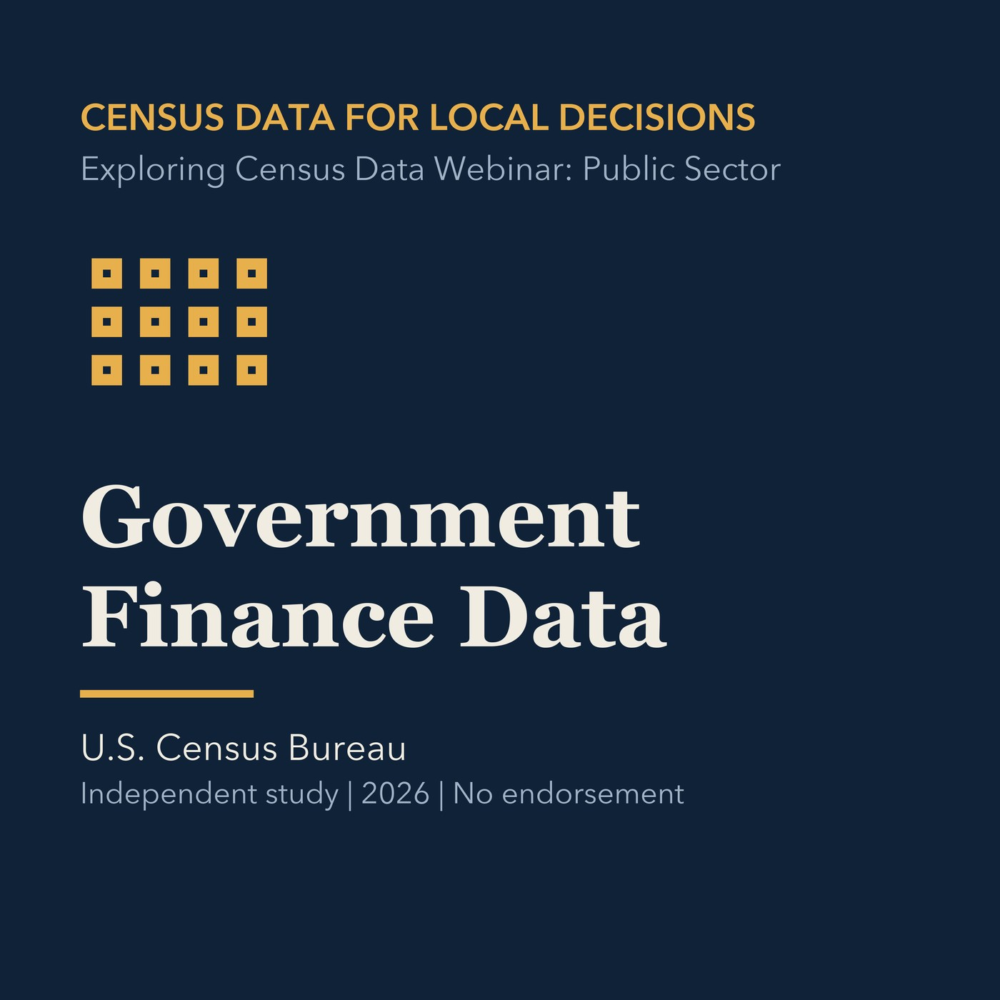

EPISODE 11
Government Finance Data
Introduces Census of Governments and state and local finance statistics.

- Stable GUID
9e30b141-8579-5685-8f89-8720e26d3a25- Release
- census-academy-v2026.2
- SHA-256
0a6c2cc6b1ba592b09a5d9fd36573ad7c151fea30238584b32d892cf0a2b48a0